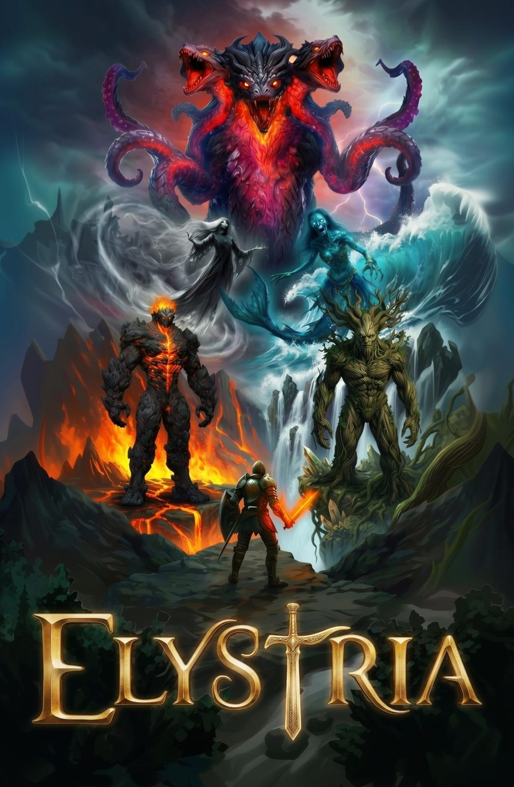
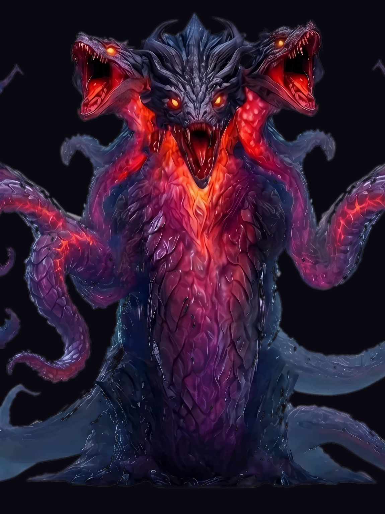
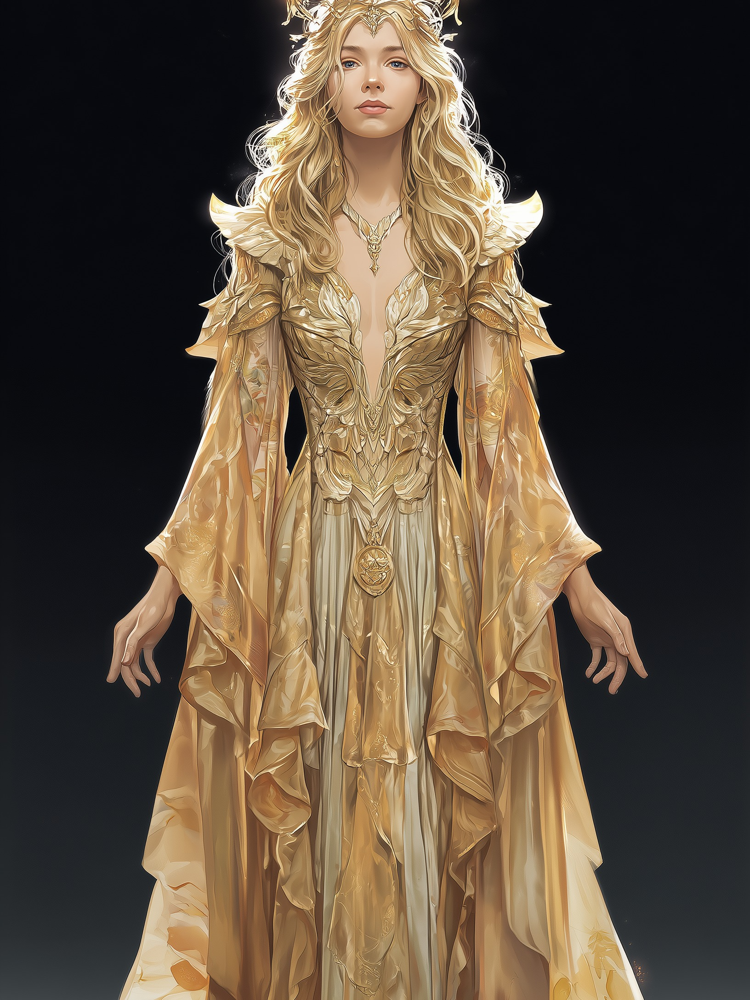
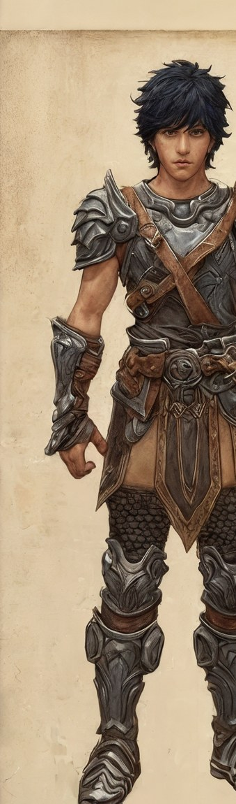

L'Era dell'Armonia
All'alba della creazione, Elystria era un mondo di pura armonia, forgiato e sostenuto dall'energia incommensurabile della Fiamma Primordiale: non solo una fonte di potere, ma la tessitrice stessa della realtà.
I suoi cinque frammenti erano custoditi da un consiglio di Dei, entità cosmiche che incarnavano gli aspetti fondamentali dell'esistenza, vegliando sull'equilibrio universale.

La Caduta
L'armonia millenaria fu squarciata dalla brama del Titano Zython, entità di antica oscurità e invidia, che desiderava il potere assoluto della Fiamma per riscrivere la realtà.
Con ferocia inaudita, Zython sopraffece quattro dei cinque Dei. Non li uccise: li imprigionò in corpi mostruosi e corrotti, guardiani involontari delle loro stesse prigioni.

Ophelia, l'Ultima Speranza
Ophelia, Dea della Saggezza e custode dell'ultimo frammento intatto, fu l'unica a sfuggire alla furia di Zython. Sacrificò la sua forma fisica, divenendo uno spirito etereo legato alla Fiamma.
La sua missione è solitaria e disperata: trovare qualcuno capace di brandire la Fiamma Primordiale senza esserne consumato, e abbastanza coraggioso da affrontare gli Dei Caduti.

Theron, il Prediletto
Dopo viaggi interminabili, Ophelia si imbatté in un vecchio ricordo: il Prediletto. Un giovane nato dall'unione proibita tra un Dio e una mortale, cresciuto ignaro della sua vera eredità in un villaggio di montagna.
La sua discendenza gli conferisce un dono unico: la Risonanza Divina e l'immunità alla corruzione. Non solo può usare la Fiamma, ma fonderla con la propria essenza, divenendo un faro di speranza.

Il Viaggio
Guidato da Ophelia, Theron dovrà attraversare i quattro Regni corrotti, liberare gli Dei caduti uno a uno e assorbirne i poteri grazie alla Risonanza Divina, fino allo scontro finale con Zython.
Ogni Dio liberato rafforza il suo legame con la Fiamma e gli dona nuove abilità di movimento, aprendo aree prima inaccessibili di un mondo sull'orlo del baratro.